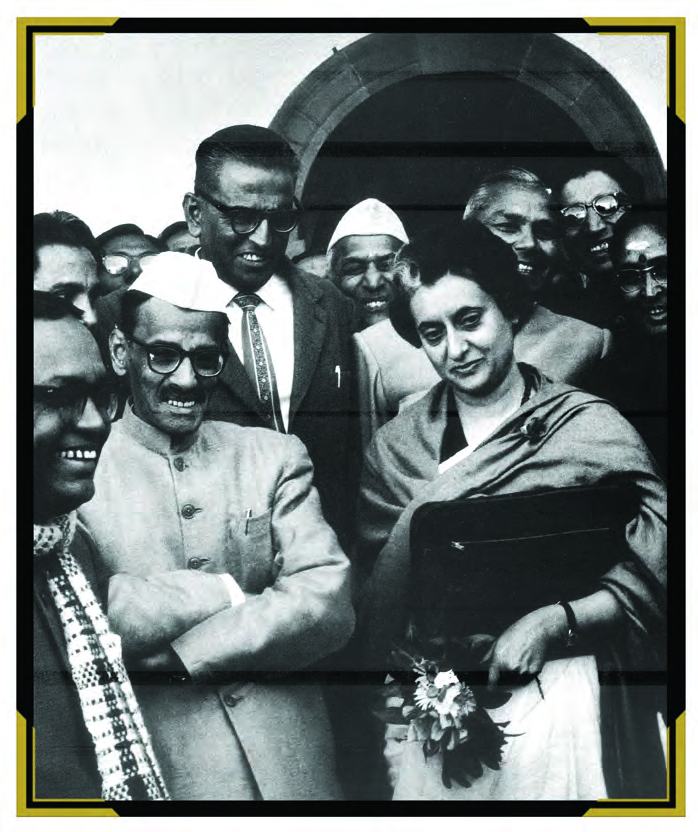
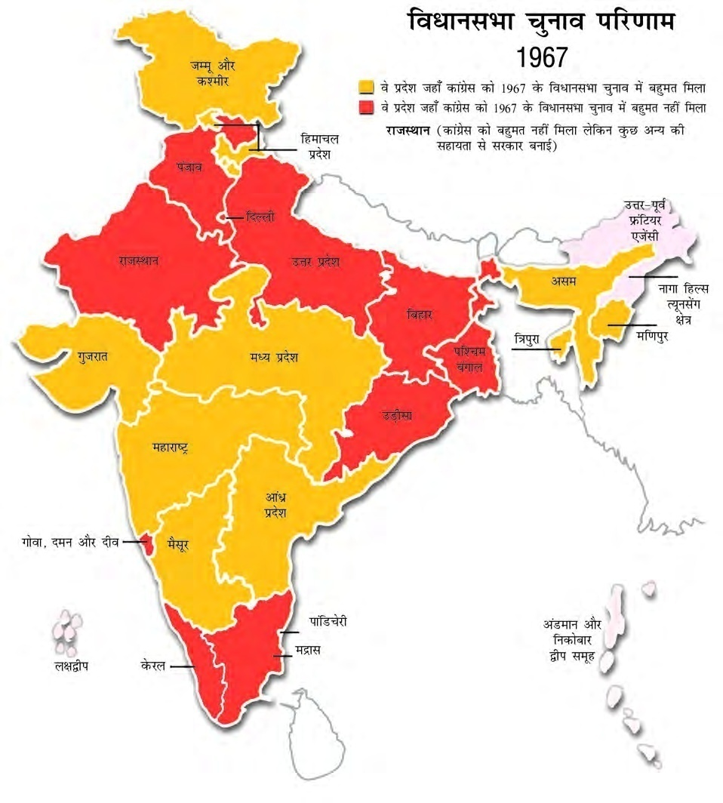
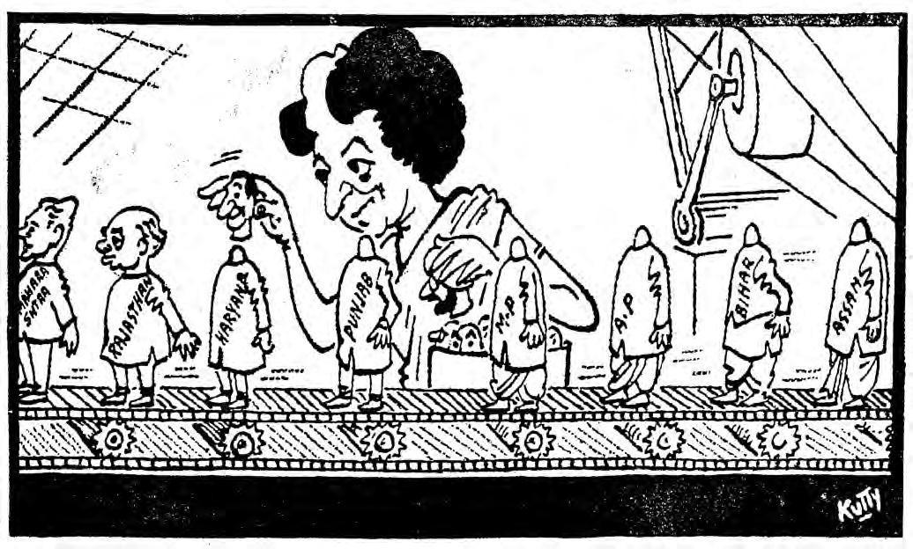
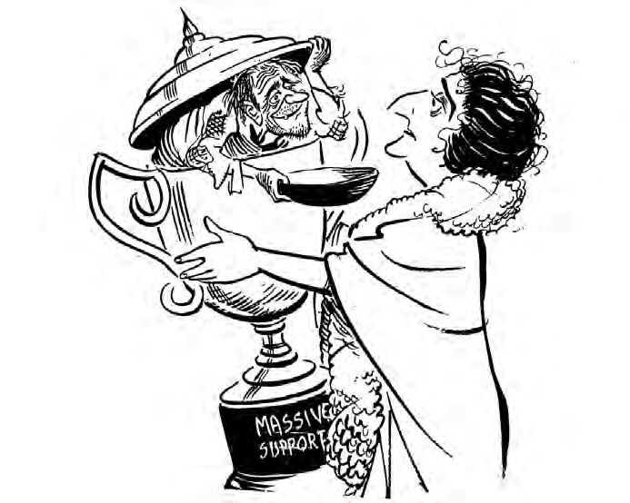

100% Google Docs Compatible with Images (Localhost-Sync)
✅ Copied Successfully! Now go to your Google Doc and Press Ctrl+V
प्रिय विद्यार्थियों, मई 1964 में जवाहरलाल नेहरू के निधन के बाद पूरे देश में एक ही सवाल था—"नेहरू के बाद कौन?" दुनिया को डर था कि भारत का लोकतंत्र नेहरू के बिना बिखर जाएगा।
लाल बहादुर शास्त्री (1964-1966): नेहरू के बाद कांग्रेस ने सर्वसम्मति से शास्त्रीजी को देश का दूसरा प्रधानमंत्री चुना।
शास्त्रीजी के बाद प्रधानमंत्री पद के लिए **इंदिरा गांधी** और **मोरारजी देसाई** के बीच कड़ा मुकाबला हुआ।
कांग्रेस के भीतर जो ताकतवर और प्रभावशाली नेताओं का समूह था, उसे **'सिंडिकेट'** कहा गया। इस समूह का नेतृत्व **के. कामराज** कर रहे थे। उन्होंने इंदिरा गांधी का समर्थन इसलिए किया था क्योंकि उन्हें लगा कि इंदिरा उनके इशारों पर चलेंगी। लेकिन इंदिरा गांधी ने जल्द ही अपनी स्वतंत्र पहचान बनाना शुरू कर दिया।

ऐतिहासिक मोड़: भारत के दो महान प्रधानमंत्रियों का काल। (NCERT Archive)
1967 का साल भारतीय राजनीति में एक बड़े बदलाव का साल था। इसे चुनाव के परिणामों की वजह से **'राजनैतिक भूकंप'** (Political Earthquake) कहा गया।
समाजवादी नेता **राम मनोहर लोहिया** ने एक नया नारा दिया—**'गैर-कांग्रेसवाद'**। उनका तर्क था कि चूंकि विपक्षी दल बंटे हुए हैं, इसलिए कांग्रेस बार-बार जीत रही है। अगर सारे विपक्षी दल एक हो जाएँ, तो कांग्रेस को हराया जा सकता है। (NCERT Insight)
परिणामों ने पूरी कांग्रेस को हिला कर रख दिया:
1967 के चुनावों से भारतीय राजनीति में एक नई बुराई शुरू हुई—**दलबदल** (Defection)। विधायक और सांसद अपनी पार्टी छोड़कर दूसरी पार्टी में जाने लगे। हरियाणा के एक विधायक 'गया लाल' ने एक ही दिन में तीन बार अपनी पार्टी बदली, जिससे यह जुमला मशहूर हुआ—"आया राम, गया राम"। (NCERT Archive Fact)
राज्यों में 'संयुक्त विधायक दल' (SVD) की गठबंधन सरकारें बनीं। उदाहरण के लिए, उत्तर प्रदेश में 'भारतीय लोक दल' और कम्युनिस्टों ने मिलकर सरकार बनाई। हालाँकि, ये सरकारें बहुत अस्थिर थीं और जल्द ही गिर गईं। (NCERT Perspective)

भारत का वह समय जब राज्यों से कांग्रेस का सफाया हो गया था। (NCERT Historical Map)
1967 के चुनावों ने यह साबित किया कि जनता बदलाव चाहती थी। 'कांग्रेस प्रणाली' की वह छतरी अब कमजोर होने लगी थी। यह भारतीय लोकतंत्र के लिए एक **'परिपक्वता की जाँच'** (Maturity Check) थी।
1969 का साल कांग्रेस के इतिहास का सबसे बड़ा मोड़ था। इंदिरा गांधी और सिंडिकेट (पुराने नेता) के बीच छिड़ी 'कोल्ड वार' अब सड़क पर आ चुकी थी।
1969 में राष्ट्रपति डॉ. जाकिर हुसैन के निधन के बाद नए राष्ट्रपति का चुनाव होना था।
राष्ट्रपति चुनाव के बाद कांग्रेस दो हिस्सों में बंट गई:
इंदिरा गांधी ने दावा किया कि उनकी कांग्रेस ही **'असली कांग्रेस'** है क्योंकि वह गरीबों और आम जनता की बात करती है।
इंदिरा गांधी ने अपनी छवि समाजवादी और जनप्रिय बनाने के लिए 10-सूत्रीय कार्यक्रम की घोषणा की। इसमें 14 बैंकों का राष्ट्रीयकरण, खाद्य वितरण प्रणाली (PDS), शहरी संपत्ति पर नियंत्रण और ग्रामीण गरीबों के लिए भूमि सुधार शामिल थे। (NCERT Insight)
इतिहास का वह क्षण जब कांग्रेस के दो फाड़ हुए। (NCERT Archive View)
कांग्रेस का विभाजन केवल कुर्सी की लड़ाई नहीं थी, बल्कि यह **'विचारधारा'** की लड़ाई थी। इंदिरा गांधी ने चुनाव को 'अमीर बनाम गरीब' (Congress-O vs Congress-R) की जंग में तब्दील कर दिया था।
आजादी के समय, सरदार पटेल ने देसी राजाओं को भारत में विलय के बदले आर्थिक सहायता का वादा किया था, जिसे **'प्रिवी पर्स'** कहा जाता था। लेकिन इंदिरा गांधी ने इसे खत्म करने का फैसला किया।
इंदिरा गांधी का मानना था कि प्रिवी पर्स **'समानता'** और **'सामाजिक न्याय'** के लोकतांत्रिक विचार के खिलाफ है।
इंदिरा गांधी ने 1970 में संविधान संशोधन पेश किया। जब राज्यसभा में यह हार गया, तो उन्होंने अध्यादेश (Ordinance) जारी किया। लेकिन सुप्रीम कोर्ट ने इसे रद्द कर दिया।
अंततः, 1971 के चुनावों में भारी जीत के बाद उन्होंने संविधान में **26वाँ संशोधन** करके प्रिवी पर्स को पूरी तरह खत्म कर दिया। यह उनकी 'गरीबों' के मसीहा की छवि बनाने में बहुत मददगार साबित हुआ। (NCERT Fact)
इसी समाजवादी मिशन के तहत उन्होंने 14 प्रमुख निजी बैंकों को सरकारी (Nationalize) बना दिया। उनका तर्क था कि बैंकों का पैसा केवल अमीरों के पास न रहे, बल्कि उससे किसानों और छोटे व्यापारियों को भी कर्ज मिले। (NCERT Perspective)
इंदिरा गांधी: जब उन्होंने सामंतवाद के खिलाफ जंग छेड़ी। (NCERT Archive)
प्रिवी पर्स की समाप्ति इंदिरा गांधी की राजनैतिक सूझबूझ का हिस्सा थी। उन्होंने यह साबित कर दिया कि वह पुरानी पीढ़ी के नेताओं (सिंडिकेट) से अलग हैं और **'आम आदमी'** की लड़ाई लड़ रही हैं।
1971 का चुनाव भारतीय राजनीति का सबसे रोमांचक चुनाव था। इसमें एक तरफ इंदिरा गांधी थीं और दूसरी तरफ सारा विपक्ष एकजुट था।
इंदिरा गांधी को हराने के लिए सभी प्रमुख गैर-साम्यवादी और गैर-कांग्रेसी विपक्षी दलों ने मिलकर एक **'ग्रैंड अलायंस'** बनाया।
यह नारा केवल दो शब्दों का नहीं था, बल्कि यह करोड़ों गरीब भारतीयों की उम्मीदों का केंद्र बन गया।
परिणामों ने पूरी दुनिया को चौंका दिया। इंदिरा गांधी की कांग्रेस (R) ने सीपीआई (CPI) के साथ मिलकर भारी जीत दर्ज की:
इस जीत के बाद इंदिरा गांधी न केवल कांग्रेस की, बल्कि पूरे देश की निर्विवाद नेता बन गईं।
चुनावों के तुरंत बाद 1971 का भारत-पाक युद्ध हुआ और बांग्लादेश का उदय हुआ। इस जीत ने इंदिरा गांधी की लोकप्रियता को सातवें आसमान पर पहुँचा दिया। विपक्षी नेता अटल बिहारी वाजपेयी ने भी उन्हें **'दुर्गा'** कहकर संबोधित किया। (NCERT Perspective)

इंदिरा गांधी: जब भारत ने अपनी 'आयरन लेडी' को पहचाना। (NCERT Perspective)
1971 के चुनावों ने यह साबित कर दिया कि असली कांग्रेस वही है जहाँ इंदिरा गांधी हैं। उन्होंने 'स्वर्ण युग' की ओर कदम बढ़ाया था, लेकिन आने वाले सालों में इसी सत्ता के अत्यधिक सेंट्रलाइजेशन ने 'आपातकाल' (Emergency) की नींव भी रखी।
1971 की जीत के बाद इंदिरा गांधी ने दावा किया कि उन्होंने कांग्रेस का **'पुनरुत्थान'** (Restoration) किया है। लेकिन यह 'नई कांग्रेस' पुरानी कांग्रेस से बहुत अलग थी।
नेहरू के दौर की कांग्रेस और इंदिरा के दौर की कांग्रेस में ये बड़े अंतर थे:
इंदिरा गांधी ने कांग्रेस को तो पुनर्जीवित कर दिया, लेकिन उसके काम करने के तरीके को बदल दिया:
विद्वानों का कहना है कि यह 'पुनर्स्थापना' नहीं बल्कि कांग्रेस का **'कायाकल्प'** था। पुरानी कांग्रेस सबको साथ लेकर चलने वाली छतरी थी, जबकि नई कांग्रेस वफादारी (Loyalty) पर टिकी थी। (NCERT Insight)

वर्चस्व का वह शिखर, जहाँ से भारत का रुख बदल गया। (NCERT Perspective)
कांग्रेस प्रणाली की इस पुनर्स्थापना ने भारत को एक **मजबूत नेतृत्व** तो दिया, लेकिन इससे राजनैतिक तनाव भी बढ़ा। अगले अध्याय में हम देखेंगे कि इसी तनाव ने भारत को 'आपातकाल' (Emergency) की ओर कैसे धकेला।
इस अध्याय में हमने देखा कि नेहरू के बाद भारत ने कैसे राजनैतिक चुनौतियों का सामना किया और इंदिरा गांधी के नेतृत्व में कांग्रेस का पुनरुत्थान हुआ।
Q: इंदिरा गांधी ने 1971 के चुनावों में भारी जीत कैसे हासिल की? मुख्य कारकों की चर्चा करें।
Ans:
- 'गरीबी हटाओ' का लोकलुभावन नारा।
- बैंकों का राष्ट्रीयकरण और प्रिवी पर्स की समाप्ति जैसे लोक-कल्याणकारी फैसले।
- विपक्षी 'ग्रैंड अलायंस' के पास किसी संयुक्त कार्यक्रम की कमी।
- इंदिरा गांधी का व्यक्तिगत करिश्मा और उनकी दृढ़ता।